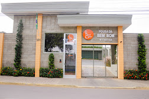

Hotel Pousada Bem Bom
 Imagem meramente ilustrativa. Substitua pela imagem real do local.O Hotel Pousada Bem Bom é uma acomodação de 3 estrelas conhecida por sua excelente localização em Itu, próxima à Praça dos Exageros. Oferece uma estadia aconchegante e um ótimo custo-benefício, sendo uma escolha popular tanto para turistas quanto para viajantes a negócios.
Os hóspedes elogiam a limpeza impecável, a cordialidade dos funcionários e o ambiente tranquilo. A pousada conta com café da manhã diário, que pode ser estilo buffet ou continental.
Avaliação dos Hóspedes
Nota 8.9 (em sites de reserva)
Comodidades
- Wi-Fi gratuito
- Estacionamento privativo grátis
- Café da manhã (buffet/continental)
- Jardim
- Recepção 24 horas
- Ar-condicionado
Contato e Localização
- Endereço: R. JOSÉ MARIA DOS PASSOS 351, Itu - SP
- Telefone: (11) 4023-0346
Voltar